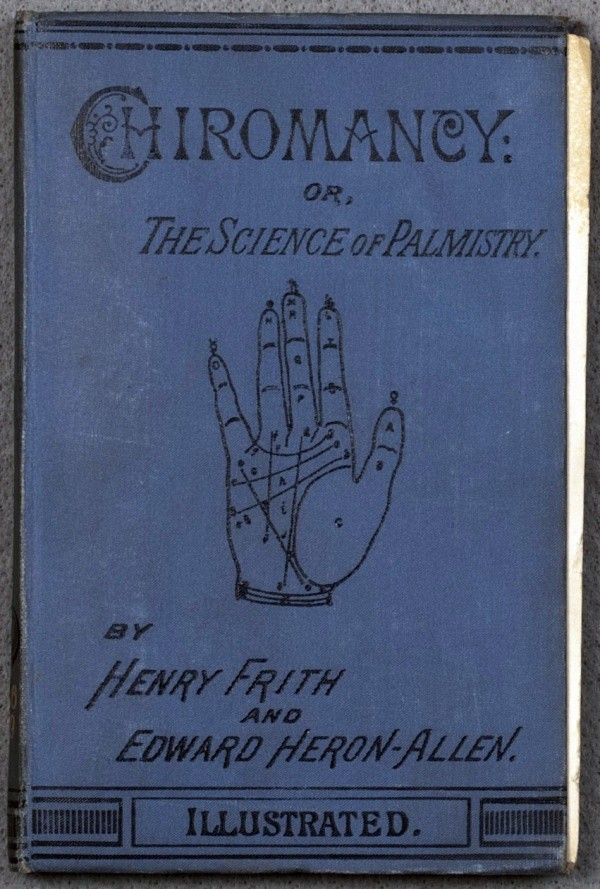
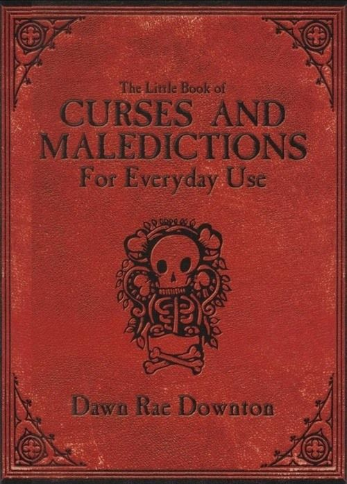
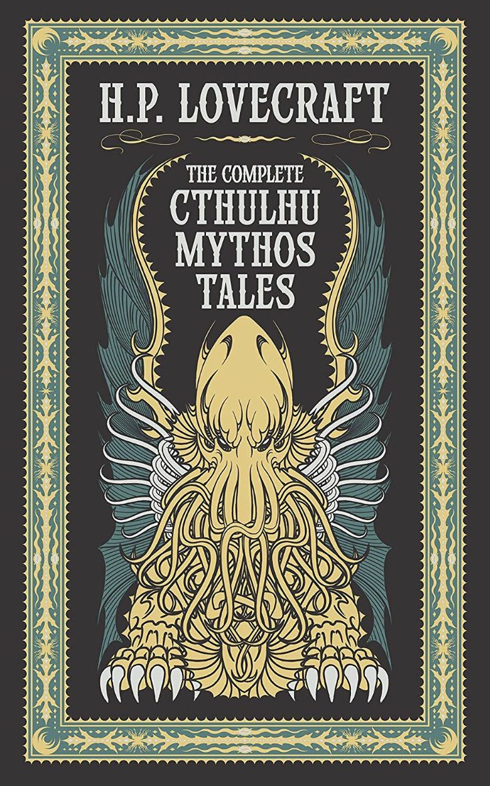

Recent Discoveries
Delve into our latest analyses of obscure manuscripts, deciphered texts, and critical reviews of uniquely challenging books. What secrets have we unearthed this month?
Explore Articles...Where Forbidden Tomes and Forgotten Lore Reside
Step beyond the veil of the ordinary. Join fellow seekers in exploring the enigmatic, the forgotten, and the forbidden within the world of literature.
Become an InitiateDelve into our latest analyses of obscure manuscripts, deciphered texts, and critical reviews of uniquely challenging books. What secrets have we unearthed this month?
Explore Articles...Participate in our exclusive discussions (online & offline) on controversial texts, hidden histories within literature, and explorations of esoteric knowledge. Discretion is advised.
View Schedule...Gain access to our restricted library catalog, member-only discussions, and research notes. Membership is selective, requiring a dedication to uncovering hidden truths.
Inquire Within...
Unlock the secrets held within the palm. This treatise delves into the ancient art of Chiromancy, interpreting the lines and mounts that may map one's character and destiny.
Uncover Details...
A controversial compilation exploring the theory and alleged practice of maledictions. Tread carefully through hexes, jinxes, and protective counter-charms. For academic study only.
Investigate Further...
Journey into the cosmic dread of H.P. Lovecraft's Cthulhu Mythos. Encounter eldritch entities, forbidden texts, and realities that challenge the very limits of human sanity.
Consult the Pages...Should you wish to inquire about membership, propose a manuscript for discussion, or consult on specific matters of obscure lore, please direct your correspondence appropriately. Note that unsolicited manuscripts are rarely accepted.